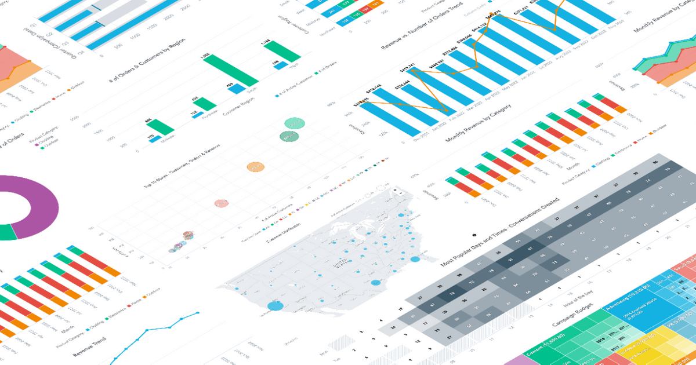
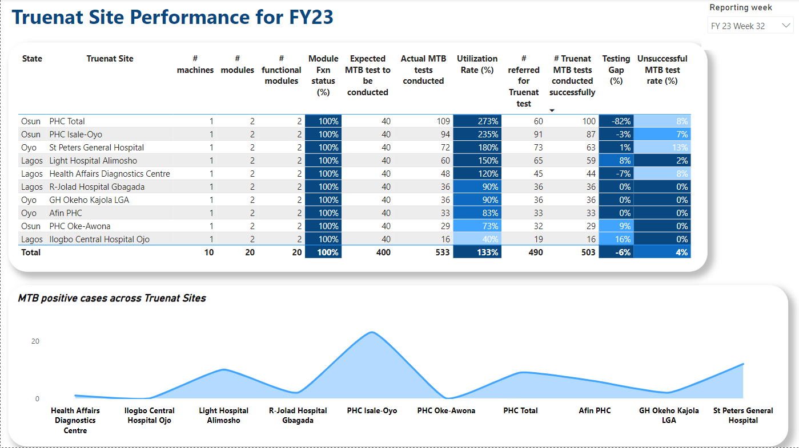

I’m passionate about transforming complex data into actionable insights that drive positive outcomes. While I have a strong background in public health and social care, enhancing everything from disease detection to resident wellbeing, I’m equally excited to take on new challenges across diverse industries. My goal is to leverage data to solve complex problems and create impactful change, wherever it’s needed.


This Power BI dashboard tracks residents' key wellbeing metrics, including food and fluid intake, oral care, weight trends, and repositioning targets. It compares actual intake with targets and highlights adherence to care routines, helping caregivers make data-driven adjustments to enhance resident health and wellbeing.

This dashboard tracks the TB care cascade across intervention states, displaying key metrics from screening to treatment enrollment. It highlights diagnostic methods used (GeneXpert, AFB, chest X-ray) and shows TB yield rates, evaluation, and enrollment percentages, along with state-wise case distribution. The tool aids in monitoring and optimizing TB control efforts

This dashboard provides a comprehensive analysis of Truenat testing sites' performance across various locations, showing key metrics like machine functionality, utilization rates, testing gaps, and MTB positive cases. It compares expected vs. actual MTB tests conducted, highlights testing success rates, and measures site utilization to ensure efficient resource allocation. This visual tool supports decision-making by pinpointing underperforming sites and optimizing test coverage across facilities.

A SQL-based project analyzing COVID-19 data to uncover key insights on infection rates, mortality, and vaccination progress. Utilized advanced SQL techniques like joins, CTEs, window functions, and temp tables to explore global and regional trends.

In recognition of my contribution to integrating health and data analytics into social care.

In recognition of my contribution to community tuberculosis case finding among private health sector providers in Lagos, Nigeria.